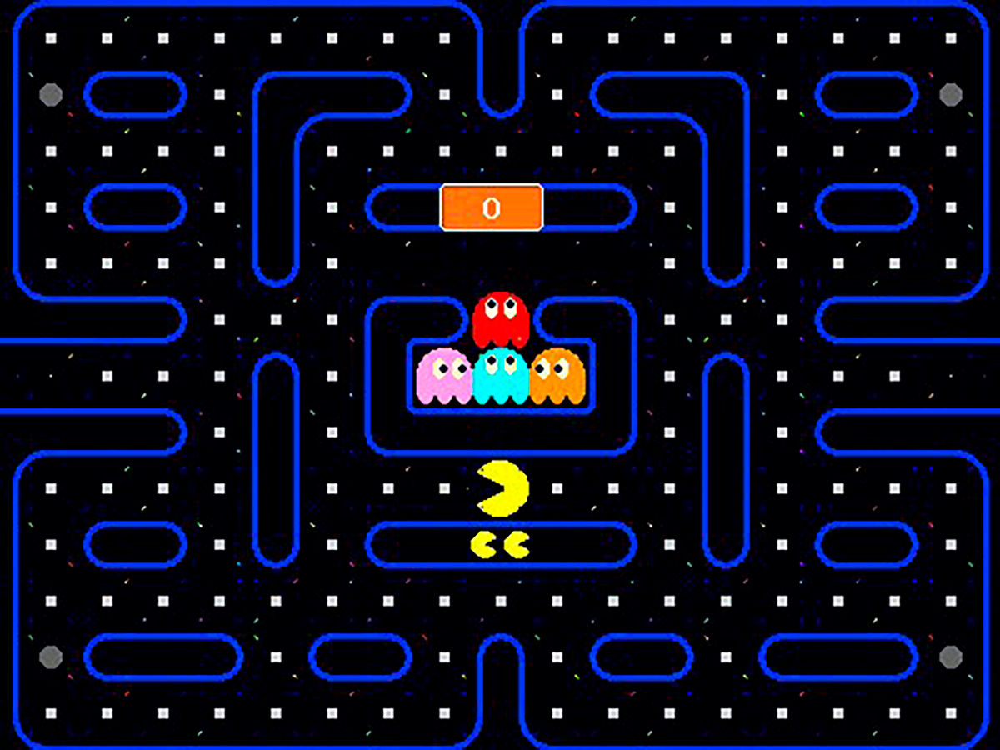
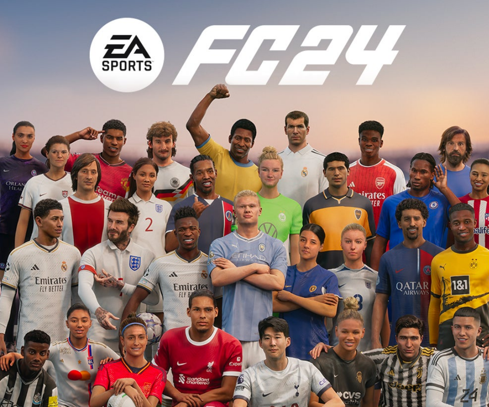
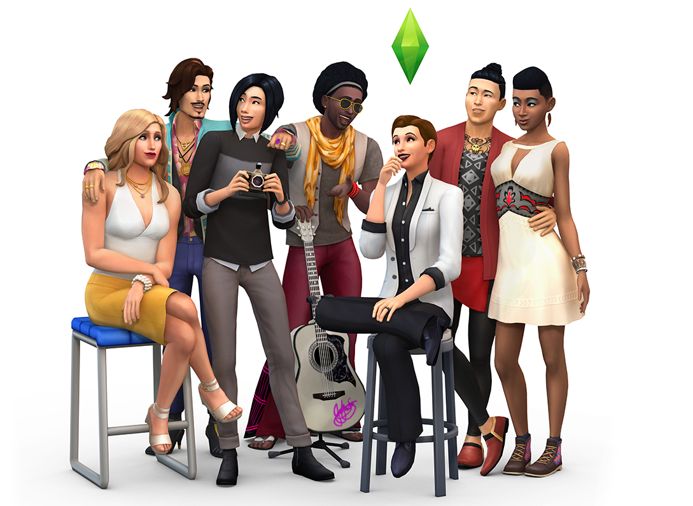

Géneros de Videojuegos
Los videojuegos de acción se caracterizan por el frenetismo y la gran inmersión. Implican realizar alguna acción repetitiva como pulsar mucho ciertas combinaciones de botones para realizar un movimiento. Debido a esto, suelen exigir una alta concentración. En el corto plazo pueden llegar a ser bastante adictivos. Sin embargo, a largo plazo se vuelven algo repetitivos, pues sus dinámicas de juego no se caracterizan por variar demasiado. En algunos casos son muy difíciles, por lo que pueden enfadar a los jugadores menos pacientes. Un ejemplo de este género sería God of War: Ragnarök

Los videojuegos de aventura se caracterizan por los peligros y las grandes hazañas presentes en cada esquina del juego. El protagonista del juego debe atravesar extensos niveles repletos de muchos enemigos y valerse de diferentes ítems para lograr sus objetivos. Suelen tener un buen argumento y una duración moderada. Algunos incluso cuentan con diferentes finales y obligan a los jugadores a tomar decisiones morales para definir el final que obtendrán. Esto mejora la inmersión y da pie a la posibilidad de jugar varias veces el juego para desbloquear todos los finales. Un ejemplo sería The Legend Of Zelda

Los videojuegos de arcade se tratan de juegos sencillos que manejan elementos de poca complejidad como una aventura, laberintos o plataformas. Es necesario atravesar diferentes pantallas para avanzar. Su ritmo facilita adaptarse rápido al juego por primera vez. No suelen ser demasiado largos. Sin embargo, están diseñados para contar con una amplia rejugabilidad. Un ejemplo sería PacMan
Los videojuegos de deportes se tratan de juegos basados en deportes reales como fútbol, boxeo, golf, tenis o baloncesto, entre otros. Suelen exigir habilidad y precisión. Al exigir habilidad, se puede mejorar en ellos a través de la práctica. En la mayoría de los casos no están respaldados por un buen argumento o historia detrás, pues lo esencial es simular un deporte. También es frecuente que cuenten con importante componente multijugador, lo que los hace ideales para jugar con amigos de forma local o en línea. Un ejemplo sería FC Sports 24
Los videojuegos de estrategia suelen manejar conceptos bélicos y de rol. Están diseñados para que el objetivo sea vencer al enemigo mediante una estrategia. Implican concentración e inteligencia. No a todos los jugadores les gustan, ya que la mayoría manejan una curva de aprendizaje y no siempre son intuitivos, por lo que puede ser necesario atravesar por un tutorial para aprender a jugarlos. Sin embargo, una vez que se aprende, pueden ser bastante divertidos y retadores. Al ser de naturaleza compleja, es ideal para jugarlo de manera competitiva. Además, en la mayoría de los casos no se trata de juegos fáciles de dominar. Un ejemplo sería Age of Empires IV

En los videojuegos de simulación se pueden encontrar videojuegos muy variados, pues se basan en simular algún elemento de la vida real como la conducción de un coche, un avión, un tren, el trabajo de un cirujano o incluso la vida de un animal. A muchos jugadores les resulta interesante que permitan simular situaciones reales sin los inconvenientes que implican en la realidad. Algunos involucran muchas horas de juego debido a su complejidad, aunque otros son mucho más sencillos e intuitivos. En algunos casos son fantasiosos, pero en otros se esfuerzan por ofrecer una experiencia realista. Un ejemplo sería
Los videojuegos musicales se tratan de juegos que involucran la interacción con alguna melodía. En algunos casos involucran periféricos especiales que imitan instrumentos musicales o alfombras para bailar pisando botones. Se caracterizan por una rápida acción y la musicalidad necesaria para completar diferentes niveles. Un ejemplo sería OSU!